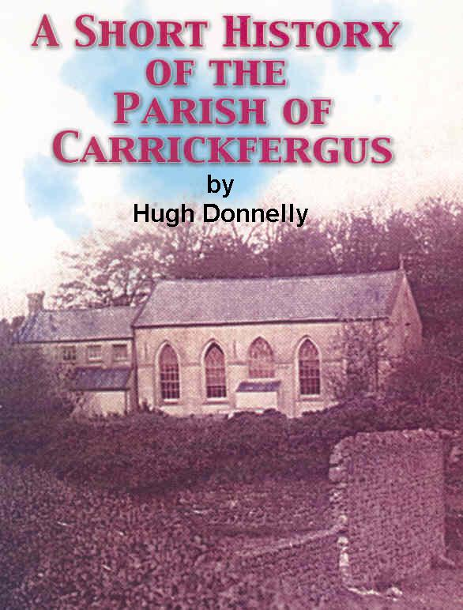
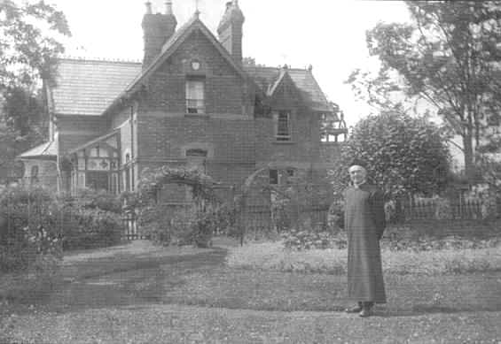
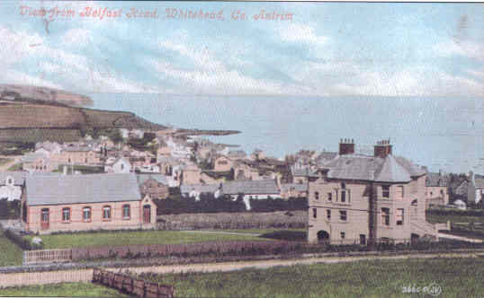
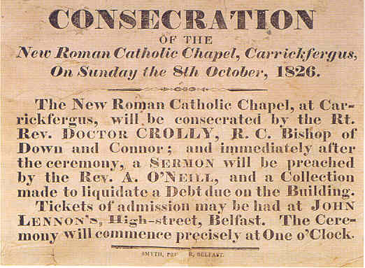
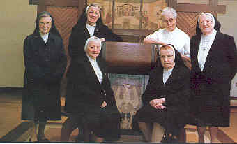
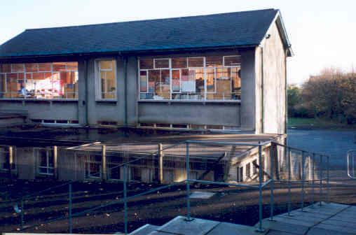
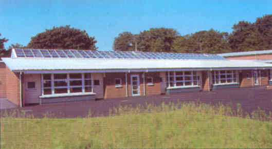

(Click on image to enter parish history page)


A SHORT HISTORY OF CARRICKFERGUS PARISH by Hugh Donnelly (See also 'the old Chapel') EARLY HISTORY In its early history the importance of Carrickfergus centres around its Castle. Old traditions say it derived its name from King Fergus, a Scottish King, who came to drink the waters of the well to cure his leprosy but who drowned when his boat struck the rock. Hence the name Carrickfergus "the Rock of Fergus". The Castle is believed by most to have been erected by John de Courcy to whom Henry II had granted all the territory he could conquer in Ulster. As is frequently the case in seaport towns, the Church was dedicated to St. Nicholas, the patron of sailors. It is valued in the Taxation of Pope Nicholas at 20 marks, which was a large sum, and shows its importance at that period. The "Royal and other Letters" in the State Paper Office, London, contain a letter written to Henry III (c. 1220) by Reginald, Bishop of Connor, in which he states, that among other valuable endowments conferred on the Abbot and Canons of St. Mary's, Carrickfergus by the generosity of John De Courcy was the rectory of St. Nicholas. Tradition asserts that the Church belonged in later times to the Franciscan friars but this is difficult to prove. What is without doubt however is that the Franciscan friary stood on the site of the jail of the County of Antrim where the yard behind the Town Hall is now situated. The discoveries made in 1776 in sinking the foundation of the jail were very impressive including human bones, an altar bell, and several gold rings. In 1805, a small brazen crucifix of beautiful workmanship was dug up near the jail. The foundation of this friary is attributed by the best authorities to Hugh de Lacy whom King John created Earl of Ulster in 1205. He is said to have erected the friary in the year 1232 and was interred there in 1243. This friary was considered a large foundation. The fortunes of the friars were very dependant on the ruling Monarch of the day and the political climate. Many of the surrounding townlands are associated with monasteries e.g. Woodbourne, Ballyprior in Islandmagee and Kilroot. In 1497 the friary in Carrickfergus was reformed to a branch of the Franciscans called the order of Strict Observance as recorded in the Annals of the Four Masters. IN TIME OF PERSECUTION During the reign of Elizabeth however this friary felt the full fury of the storm of persecution which raged throughout this island. Wadding tells us that the religious were expelled and that the English Governor, after seizing all the sacred properties of the friary, cast five of the friars into prison. (In "the time of persecution", as O'Laverty refers to it, no priest resided in Carrickfergus. When they visited it, according to tradition, Mass was celebrated at a place near the Commons (the land above the town of Carrickfergus facing inland from the sea) called The Priest's Bush or in a house belonging to some Catholic. Mass was also said to be celebrated in a place on the Commons (Middle Division) called Craig-na-brathair -"The Friar's Rock". At Stony Glen, Knockagh near the verge of the steep slope there formerly stood a religious house, said to be a friary, the foundations of which were dug up 200 years ago. It was called "the Priest's House". It is said that the walls were four feet thick and firmly grouted. At the end of the glen, at a place known locally as the Friar's Well, Mass was celebrated during the prevalence of the Penal Laws.
One of the most interesting documents regarding the Franciscan friary is a Manuscript written about the year 1630 by Father Francis Ward in which he says, "The Convent (Friary) of Carrickfergus was founded in the maritime city of that name in the diocese of Connor in Ulster about the time of St. Francis. It was suppressed in the year 1560, the friars having been driven off and dispersed and some of them killed. It was at last totally destroyed by Arthur Chichester, Viceroy of Ireland. It remained vacant till the year 1626 when a residence was erected in the district and F. Edmond Cana, a theologian and preacher, was appointed Superior". In the Franciscan records there is a list of the Guardians (Superiors) of the Franciscans at Carrickfergus beginning with Father Paul O'Neill who was elected on the 15th August 1629. It is almost certain that this Father Paul is the same person whose name appears on the "O'Neill Chalice" dated 1632. This beautiful Chalice is still in the possession of our parish.
|
|
The inscription records that Frater (Brother) O'Neill (Religious were known as Brothers whether they were ordained priests or not) was responsible for the making of the chalice on behalf of the Monastery of Carrickfergus in 1632. It is a valuable faith-link with the past in our Parish. Being a Catholic in
Carrickfergus was not easy as they were not considered as loyal citizens and while expected to contribute to other religions, they and their families suffered in practising their faith. In 1606 for example, we find the Mayor stating "that the nominated papists maie be compelled either to come to churche or to avoid the town" -Towne
Records. It must be remembered that freemen's lands and the privileges of the freedom of Carrickfergus could not be enjoyed by any Catholic. The scanty mention of Catholics and Priests which the records present show that they had almost disappeared from Carrickfergus. In 1692 a census of the people within the town of Carrickfergus revealed there were 469 persons apart from the alderman, burgesses, and officers of the corporation. Of these 71 were noted as being Roman Catholic. |
The 0 'Neill Chalice made of gold has inscribed on it in fine writing the Latin words: 'f. Paulus 0 'Neill caraud pro Conventu Carfergus fieri 1632" |

PARISH PRIESTS OF OLD McSkimmin in his History of Carrickfergus says..."The only Roman Catholic clergymen known to officiate here are ... In 1732 ...Moore; 1739 ...Cairns; 1761 ...Felix Scullion; 1788 ...F. M. V. McCarey; 1802 ... Thomas Cassidy; 1813 ...Constantine O'Boyle; 1814 ...Daniel McMullan; 1820 ...Arthur O'Neill". We know little of the clergymen who officiated in the extensive districts of which Carrickfergus formed a small part. The first priest on the list is Father Edmund Moore (Edmund O'More) ordained by Archbishop Plunkett in 1669 recorded as officiating in Carrickfergus in 1732 aged 86 years. He had under his charge districts included in the present parishes of Carrickfergus, Larne, Ballyclare and Glenarm. Father Felix Scullion is noted by a Henry Cocksedge in 1764 as a "Parish Priest, who in summer time frequently says Mass in the fields, and in the winter in some of his parishioners' houses". Father Thomas Cassidy was a native of Maghera, Co. Derry. Father James Matthew Vincent McCarey O.P. was a native of Culfeightrin. He erected a chapel at Ballygowan and a temporary chapel at Carrickfergus. He was a member of the Dominican Order. Father Constantine O'Boyle was a native of the parish of Duneane (Toomebridge). Residing in Larne, he officiated about 1813 as Parish Priest of Carrickfergus and Larne but only for a short time. He died of typhus fever in 1817 aged 34 and is interred in Cranfield. Father Daniel McMullan was appointed in 1814 as Parish Priest of Carrickfergus and Larne and Chaplain of the County Gaol. At that time the medical officer of the jail was a Doctor Stewart whom Father McMullan unfortunately offended by speaking disparagingly of his skill. Later Doctor Stewart made the allegation that Father McMullan had broken prison rules by drinking punch with some debtors whom the priest had known in respectable circumstances. This Doctor brought the case to the notice of the Judge at the Summer Assizes of 1815. The Judge dismissed Father McMullan from his chaplaincy. Finding that his usefulness in the parish was much impaired by being debarred from attending the prisoners, he resigned the parish in March 1817. Father McMullan, despite his indiscretion, was a priest of irreproachable character, a distinguished preacher, and gifted singer. His successor Father Arthur O'Neill was born on the 14th May 1783, in Finvoy, Ballymoney. He was appointed Parish Priest of Carrickfergus and Larne on 17th May 1817. NEW CHURCHES BUILT IN CARRICKFERGUS (See also 'the old Chapel') Father O'Neill obtained in 1825 from E. Smith Esq; for the sum of £68.5s a lease for 999 years of an Irish rood of ground on Barley Hill, Carrickfergus. He erected the chapel in Carrickfergus which was dedicated on 8th October 1826, by Dr. Crolly. Father O'Neill preached the opening sermon. He also built a small chapel in Larne and the church of St. Columcille between Carrickfergus and Ballyclare dedicated on the 9th August 1840. He built this church on a garden bequeathed for the purpose by Hugh Mulholland. It was dedicated by Dr. Denvir and Dr. Crolly, Primate of All Ireland, preached on the occasion. An interesting description of the occasion by a local journalist stated "The crowded congregation was composed almost entirely of liberal and enlightened Protestants and Presbyterians who have subscribed generously to the erection of the house, did as liberally on this occasion to liquidate the debt due to the chapel. The collectors were Messrs. Dunn, Cowan, Stuarts, Magowen and Borthwick Esqrs. Every man Protestant or Presbyterian".
|
|
 Notice of Consecration of St Nicholas Carrickfergus |

Father O'Neill died at his resident in Carrickfergus on October 1851 and was buried in the adjoining cemetery. In a register kept by Father O'Neill, we learn that the receipts of his new parish for his first year were £94 11s 4d of which £30 was for the chaplaincy of the jail. After the death of Father O'Neill the parish was divided and the districts of Ballygowan and Larne were made into a separate parish. The Rev. John Cunningham was appointed Parish Priest of Carrickfergus. He had studied at the Irish College in Paris before his ordination in Belfast, by the Most Rev. Dr. Denvir on the 5th May 1842. He was the first Parish Priest of the newly-constituted parish of Portrush before coming to Carrickfergus. He remained in Carrickfergus until 1869 when he was appointed Parish Priest of Duneane. Father Charles Shane Quin, who was a native of Lower Creggan, Co. Armagh, was appointed Parish Priest of Carrickfergus in 1870. Before his appointment to Carrickfergus he ministered in the parishes of Belfast, Ahoghill and Saul. Father Quin rebuilt and enlarged St. Columcille's Church in 1882. This was not an easy task as the catholic population was neither rich nor powerful. The early years of Father Quin's ministry are recalled for us by Eilis Crickard in her delightful compilation entitled "STOP AT THE TRAMWAY BRIDGE" based on oral recollections of an adult class. In it she relates that her own father went to Mount St. Nicholas (the Chapel School) in 1871. It was then the National School which was inter-denominational. Her father had told how a curtain divided the boys from the girls with Mr. Lundy teaching the boys and Mrs. Lundy teaching the girls. Not only all religions but all age groups attended in those days. He told of the men with beards who were there. They were usually sailors who needed to be able to read and write to become captains or mates of their ships, and they had not been to school in their childhood. On Thursday afternoons the Catholic children had to remain behind the others for religious instruction. The Master asked "Those of other than the Roman Catholic Persuasion to dismiss" (Teachers always addressed their pupils with great formality in those days). Father Quin's successor was Father William Dempsey who was born in Coldagh in the parish of Ballymoney and ordained by Bishop Dorrian in 1868. On November 1 1879 he was appointed Parish Priest of Carnlough where he improved the church. Father Dempsey came to Carrickfergus as Parish Priest on November 10, 1889. NEW CHURCH FOR WHITEHEAD It was during his time as Parish Priest that the Catholics of Whitehead discussed the building of a small church. This discussion took place in March 1898. The building was completed the following year at a cost of £500. It was intended as a temporary church, and would be used as a school when a permanent church was built. On Sunday July 9th 1899 Father William Dempsey P.P., Carrickfergus celebrated Mass in the new church. A few months later the church was dedicated and known as St. Colman's. (There are several St. Colman's listed in the Irish Calendar but this St. Colman was known as "Colman Ella". He was the Co-Patron of Connor and founder of Muckamore Abbey. Like all missionaries he travelled a great deal - all over Antrim, up to the Islands, across the Argyle and down to Aryshire.) In February 1908 work commenced in laying the foundations for a permanent church. The opening of the new church took place on Sunday April 25 1909. As P.J. O'Donnell in his well researched book on the history of Whitehead points out this was the first Church in Ireland to be dedicated to "Our Lady of Lourdes". The ceremony began with a procession led by Rev. Daniel Mageean, Professor of St. Malachy's College, Belfast (later Bishop of Down and Connor) as cross bearer and also including Rev. P. J. O'Neill, President of St. Malachy's College and The Rev. F.C. Henry P.P. Carrickfergus, along with acolytes, chanters and altar boys. "The music of the Mass", noted one of the contemporary newspaper reports, "was rendered by the Ardoyne Male Choir under the conductorship of Hugh Werner, the results of whom cultured tuition were apparent in the devotional and expressive singing". Four hundred pounds was collected in donations at the dedication ceremony, while subscriptions received to that date totalled £1580. Father Henry thanked the Lord Bishop and his brother clerics for dedicating the church, and it was reported that he also thanked "Those Protestant gentlemen of Whitehead and other districts who assisted ...and who were present that day, while some who were unable to attend had sent generous subscriptions".
|
|

|
|

After Our Lady of Lourdes Church was built the old church (St. Colman's) became a school. It opened as a school on January 1st 1909 and was called Lourdes Public Elementary School. It is now used as a parish hall. Situated just above the old school at the junction of Victoria Avenue and Prince of Wales Avenue is a large house known as the Bishop's House. This fine building was erected in 1899 and was the former summer residence of Bishop Henry the Catholic Bishop of the Diocese of Down and Connor. Before the building of the first church Dr. Henry had given the use of his residence for the celebration of Mass so that residents and visitors might no longer be compelled to undertake the journey to Carrickfergus.
|
EXTRACT FROM THE 'IRISH NEWS' "The Bishop, Dr Tohill, announced that the new church in Whitehead will be dedicated on the last Sunday or April, and it will probably be the first church in Ireland to be dedicated under the title of OUR LADY OF LOURDES. The new church in Whitehead will cost £1,500, its Tower about £180, the church furniture about £500. There will also be a debt of about £550 on the chapel-school in Whitehead. It will take the further expenditure of £100 in it to ratify the requirements of the National Board before it is recognised as a National school. The total debt in connection with the church and school in Whitehead will be nearly £3000. Then providing of a residence for the priests at Whitehead is still to be dealt with. The entire property in Whitehead, i.e. the house and grounds on which stands the church and school, was the private property of the late Most Rev. Dr. Henry. By his will it passes away to the Association of the Propagation of the Faith in Dublin. Unless some favourable arrangement is come to with them the parish must take up another very heavy burden of providing a residence for the priest in Whitehead. To pay the mere ground rent of the place, which is £16, and taxes and current expenses of church and school and repairs would weigh heavily on the small community in this parish. Off course, the church in Whitehead has been built chiefly for summer visitors from Belfast and elsewhere. They will be reasonably expected to be GENEROUS IN THEIR SUPPORT of a church and mission established principally for their sakes. Since the beginning of the present year the chapel-school at Whitehead had been opened as a school. It has accommodation for 100 children, and will be of inestimable benefit to the catholic children in the district. In Carrickfergus, two new schools were also absolutely necessary for years. The National Board has undertaken to give a grant of two-thirds of the cost. The parish must provide the remaining one-third, which is estimated at £400. The Church of St. Nicholas will also require some money to be expended on it in the not too distant future. It. is not in a good state of repair. To meet all this debt, truly enormous, that has been and will be incurred on behalf of the parish, Fr. Henry P.P. has raised - not withstanding the long financial depression - by sanction of the late Most Rev. Dr. Henry for all the works he has undertaken, and full permission to collect funds in all the parishes of the diocese. The Bishop recommended Fr. Henry and his most deserving cause to the kindly consideration and generous charity of both clergy and laity. In all truth, his burden was a heavy one. The new church at Whitehead will be solemnly dedicated on the last Sunday of April. The title of the church will be THE CHURCH OF OUR LADY OF LOURDES. On tomorrow, for the first time, the feast in honour of the first apparition of our Lady at Lourdes, will be observed throughout the entire Church. Therefore, we will gladly name in her honour THE FIRST CHURCH dedicated in the diocese, after this new Feast in her honour was extended to the whole Church. |
BACK TO CARRICKFERGUS In 1910 Father Henry was responsible for the building of what was then known as the "new school" in Carrickfergus. This building housed the new St. Nicholas' Boys' and St. Nicholas Girls' 'Schools and replaced Mount St. Nicholas National School. It was built on a site further up the lane towards the church. The old school later became a hall and many years later a playgroup centre. On the death of Father Henry P.P. Dr. McRory, then Bishop of Down and Connor, appointed in December 1915 the Rev. George McKay an enterprising and energetic Parish Priest.
|
|
One of Father McKay's first enterprises was the re-opening of St. Columcille's in June 1916. This church had been closed for about thirty years. It remained in use until 1962 and was finally demolished in 1987. At the time of Father McKay's appointment a debt of over £2000 (a considerable sum of money in those days) was owed by the parish. However with his band of helpers Father McKay cleared this debt by running whist drives, dances and concerts. He was a good and persuasive preacher who enlisted the help of many benefactors in raising money for the parish. In 1917 a portion of the church was rebuilt but after a number of years it was found to be too small for the growing congregation. |
In order to enlarge the Church Father McKay decided to demolish the old house which was at the end of the Church (formerly occupied as a dwelling by the late Father O'Neill). When it was removed the walls of the Church were extended thirty feet to include a new sanctuary and sacristy. The estimated cost was one thousand two hundred pounds. To raise the necessary funds Father McKay called his parishioners together and it was decided to hold a "Fancy Fair and Sale of Work" on 17th and 18th of September 1926. The fair was formally opened by Joseph Devlin M.P., the nationalist member of parliament, noted as much for his witticisms as for his parliamentary flair, on Friday 17th September. Mrs. J. Ballantyne, a benefactor of the parish, performed the opening ceremony on Saturday 18th September. The project had the encouragement and approval of Dr. Joseph McRory D.D., Bishop of Down and Connor, who later became Cardinal McRory, Primate of All Ireland. It was a great testimony to the leadership and business sense of Father McKay and the zeal of the parishioners that the work of rebuilding and extending was completed in time for the re-opening on the actual centenary of the original foundation. Tribute was paid by Father McKay to fellow Christians of other denominations for their help and support. The church (extentsion) was blessed by Dr. McRory on Sunday 10th October 1926 and Very Rev. B. Laverty P.P. V.F., Kilkeel preached the seffi1on to a great congregation from the text "Thou art Peter and upon this rock I will build my Church and the gates of hell shall not prevail against it ".
|
Each priest brings different gifts to a parish. Father Dominic Leyden who succeeded Father McKay as Parish Priest of Carrickfergus in 1938 was a quiet, contemplative man whose main interest was the development of the spiritual and pastoral side of the parish. Father Leyden was ahead of his time in so far as he knew how to employ the talents of his
parishioners in evangelising through organisations like the Legion of Mary and St. Vincent de Paul. Events which brought great joy to Father Leyden were the ordinations to the Priesthood of his parishioners. Just two years after his appointment as Parish Priest he was delighted to welcome home Father John McCarroll who had been ordained on June 23rd 1940 in Maynooth. Father Johnny was
born in Carrickfergus on 19th July 1915 and
|

| A TIME OF GROWTH By the 1950's Carrickfergus had its own "Industrial Revolution" commencing in June 1950 with the arrival of Courtaulds and its production of a variety of man-made fibres. This was followed by I.C.I. (Imperial Chemical Industries) in 1963. "The Big Three" as they were known was complete when Carreras (N.I.) Ltd. part of Rothmans set up a pilot manufacturing plant in 1965 producing Tobacco products. At the peak of production the "Big Three" employed 6,000 peop.1e and as a result the population of Carrickfergus expanded from 11,384 in 1957 to 27,044 in 1971. A large number of these workers, many of whom came from West of the Bann belonged to the Catholic Religion. They were young and had young families. The priests of the parish had a time of intense activity providing for the spiritual and educational needs of such an influx of Catholic people. Father McKenna and his curates had a daunting task trying to raise the money to extend and build the schools to accommodate the influx of children. St. Nicholas' Boys' and Girls' school was refurbished and extended in 1959. On the 23rd August 1961 a new primary school was opened in Greenisland named St. Colman's with a staff of three teachers. In 1969 this school was enlarged with five additional classrooms. It was in the same year that St. Colman's Church, Greenisland was officially opened in October. Indeed by 1972 the school numbers had reached 329 and there was talk of Greenisland becoming a Parish. These schools were classed as "Voluntary" which meant that the Parish was responsible for the entire cost of the heating, lighting and cleaning of the schools. Beside this the Parish had the additional expenditure of providing 35% of the capital required for the actual building and extension of schools. This heavy burden of educational provision continued with the opening of St. Nicholas' Secondary School, Carrickfergus in 1969. Those were the days before "The Four and Two Committees"came into existence. One of the significant events of those years was the arrival in the parish of "the nuns" as they were called in 1968. The sisters belonged to a French congregation called "The Daughters of Jesus" who engaged in a very wide apostolate in responding to the diverse needs of the parish.  Daughters of Jesus, Greenisland These involved education of the young, visitation of hospitals and homes, preparing adults for reception into the church and preparing some children for the reception of the Sacraments.. The Sisters also provided accommodation for students irrespective of creed, at the fast growing Polytechnic (later to become the University of Ulster) from 1971 until
1988. The Daughters of Jesus had a very close and active role with the Association for Mental Health known as Beacon House in Carrickfergus. This covered a span of sixteen years. Besides these external involvements the sisters have provided a fount of spiritual strength and support for the parish in a humble and quiet way. It was a sad day for all concerned but especially for the principal Mr. Liam Raven and vice-principal Mr. Colin Boylan who had to supervise the final closure. The school had been held in high regard by parents and pupils. A former teacher recalled on the last school day in June 1989 a group of 5th Year pupils including the big
"tough" boys standing outside the school weeping.
Church built 1981, Burnt 1997 The special preacher was the Very Rev. Patrick McKavanagh, P.P. Holywood. Father McGarry P.P. was the Principal Concelebrant and the other Concelebrants were: Rev. Daniel McBride, P.P., Ballymoney, Rev. Francis McKenna, P.P., Braid Rev. Archibald Kelly, C.C., |
 Demolishing of St Nicholas' Secondary School
Demolishing of St Nicholas' Secondary School St Nicholas' Youth Club also closed and demolished 1996
St Nicholas' Youth Club also closed and demolished 1996
A TIME OF REBUILDING WITH THE ARRIVAL OF FR MICHAEL COSGROVE It was not possible for Father Crossin to return to Carrickfergus as Parish Priest due to the state of his health. In such difficult circumstances Father Michael Cosgrove took up his residence as Parish Priest on May 8th, 1997. Father Cosgrove attended St. Gall's Primary School and St. Thomas Secondary School, Belfast before completing his secondary education at St. Aloysius Secondary School in Cushendall. Afterwards he worked in the family business for a number of years before deciding to go to St. Peter's College, Wexford to study for the priesthood. Father Cosgrove was ordained on June 15th, 1986 in St. Mary's Church, Cushendall by Bishop Anthony Farquhar, Auxiliary Bishop of Down and Connor. After ordination Father Cosgrove worked as a curate in St. Teresa's and St. Paul's parishes in Belfast. He was appointed chaplain to the Royal Victoria Hospital, Belfast in 1988 and six years later in 1994 was appointed chaplain to the Mater Hospital and curate in St. Patrick's, Donegall Street, Belfast. While in St. Patrick's he was involved in helping to rebuild St. Patrick's Church which had been gutted by an accidental fire. It was almost as if this was a preparation for the work ahead of him in Carrickfergus where two churches required rebuilding. St. Colman's, Greenisland and St. Nicholas', Carrickfergus. The third church in the parish, Our Lady of Lourdes, Whitehead needed renovation and modernisation. At the, same time a new modern primary school was in the process of being built to replace the old St. Nicholas' Primary School in Carrickfergus. The priests and people of this ancient parish worked together in faith and hope in the work of rebuilding. They rejoiced together too at the Solemn Re-opening of St. Colman's Church, Greenisland on 23rd November 1997.  St Colman's Greenisland. Now in Whiteabbey Parish St Colman's Greenisland. Now in Whiteabbey ParishThe work of rebuilding was quickly and efficiently completed by one of the Greenisland parishioners, Brian O'Kane, the main building contractor. The Most Reverend Patrick Walsh, Bishop of Down and Connor gave the Solemn Blessing and Re-opened the Church, encouraging the parishioners to go forward in faith and hope. In his homily Bishop Walsh said "This is a beautiful church, a church with many distinctive features of artistic merit and a church which in its internal arrangement emphasises unity; the unity of God's people gathered in worship around the altar and gathered around Christ, the focus and source of all unity". The next day of great rejoicing and gladness for the whole parish occurred on Thursday 19th March, 1998 at the Blessing and Official Opening of St. Nicholas New Primary School.   St Nicholas' Primary School Old (left) and New (right) Essentially the new St. Nicholas' Primary School could be described as "a thoughtfully planned school" which according to the Department of Education of Northern Ireland is "at the heart of a good learning environment". Bishop Walsh blessed and officially opened the new school. In his introduction Father Michael Cosgrove, P.P.
paid tribute to his two predecessors, Father Brendan McGarry and Father Hugh Crossin for their contribution to the building of the new school. NEW CHURCH FOR A NEW MILLENNIUM
|

Source: A Short History of the Parish of Carrickfergus - Hugh Donnelly 2000
PARISH TIMELINE
1826 Chapel of St Nicholas’ built in Carrickfergus.
1871 Mount St. Nicholas (the Chapel School) was then the National School in the area and
was inter-denominational.
1899 First Chapel opens in Whitehead. Named St Colman’s.
1909 New Chapel in Whitehead opens. Named Our Lady of Lourdes.
(Old chapel now the community centre).
1910 St. Nicholas' Boys' and St. Nicholas Girls' 'Schools replace Mount St. Nicholas National
inter-denominational School.
1926 St Nicholas’ Chapel in Carrickfergus extended. (Sanctuary and Sacristy added).
1950 Courtaulds factory opens.
1959 St Nicholas’ Primary School refurbished.
1961 Greenisland Primary School opens.
1963 I.C.I. factory opens.
1965 Carreras factory opens.
1968 The nuns, ‘Daughters of Jesus’ establish house in the parish (Greenisland).
1969 Parish numbers reach 8000.
St Colmans’ Church Greenisland opens.
St Nicholas’ High School opens.
Combined Primary Schools numbers reach 700.
1971 Town’s population increases from 11,384 in 1957 to 27,044.
Factories employing 6000 people.
1972 Greenisland Primary numbers reach 329.
1974 Ulster Workers strike.
1979 Fr McGarry succeeds Father McKenna (RIP).
1980 Parish numbers drop to 4000 (halved in 10 years).
1981 New church opens in Carrickfergus under Fr McGarry
Courtaulds and ICI close with loss of 4000 jobs.
1886 Carreras factory closes with loss of 850 jobs.
Greenisland Primary School reduced to one teacher.
1989 St Nicholas’ High School closes.
1990s Youth club closes.
1992 Greenisland Primary School closes.
Carrickfergus Intergrated Primary school opens.
1993 Fr Hugh Crossan succeeds Fr McGarry (transferred to Protstewart, RIP 1998).
1996 St Colman’s Church in Greenisland burnt in arson attack.
1997 St Nicholas’ Church in Carrickfergus burnt in arson attack (Mass in Community Centre).
Fr Michael Cosgrove takes over as Parish Priest (Fr Crossan retires due to ill-health).
St Colman’s Greenisland repaired and reopens.
Small beginnings made to Inter-church relationships and meetings.
1998 New St Nicholas’ Primary School opens in Carrickfergus to replace old building.
1999 Our Lady of Lourdes Church in Whitehead refurbished and reopened.
2000 New St Nicholas’ Church and Pastoral Centre opens in Jubilee year.
Parish numbers in region of 1800.
Parish Primary School numbers 70 (1/10th of 1969 figure).
Plus approx 50 catholic children at integrated school).
2002 Greenisland transfers to St James Parish, Whiteabbey as part of Diocesan
Rationalisation Plan.
2005 Fr Sean Dillon installed as Parish Priest.
(Fr Cosgrove moves to Larne as Parish Priest. Sadly passes away November 2006).
2006 Youth Club reopens in Community Centre. |
See also:
'The Old Chapel'
More photographs